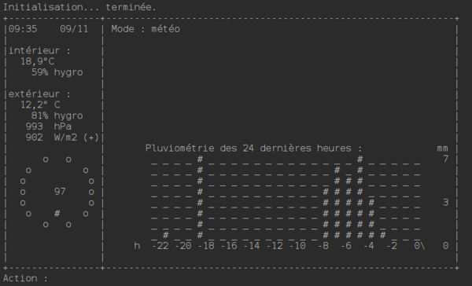
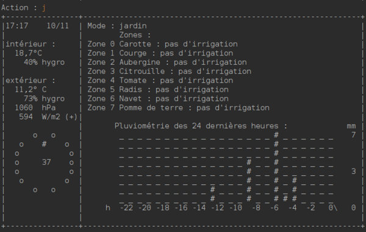

Biosphere7
Implémentation de règles d'un jeu de plateau et d'une IA pour ce dernier
Cahier des charges
- Coder les règles puis une IA pour un jeu de plateau
- Équipe de deux personnes
- 15 règles à implémenter fondamentales au jeu
- L'IA affronte les IA d'autres groupes d'étudiants
- Réalisation d'un document de comparaison algorithmique sur le choix de l'IA
Langage(s) et méthode(s)

- Poser les algorithmes sur papier
- Suivre des principes de qualité (Git et tests)
- Revenir sur des implémentations précédentes pour corriger des bugs
Livrés/livrables
- Code réalisé jusqu'à la moitié des niveaux (7), IA fonctionnelle
- Certaines fonctionnalités m'ont pris plus de temps que d'autres
- Stratégie de l'IA assez complexe à imaginer
Compétences acquises
- Travail à plusieurs
- Programmation de fonctionnalités précises
- Développement d'une IA pour un jeu, compréhension algorithmique
- Rédaction d'un document technique détaillé précisant l'exploration algorithmique

